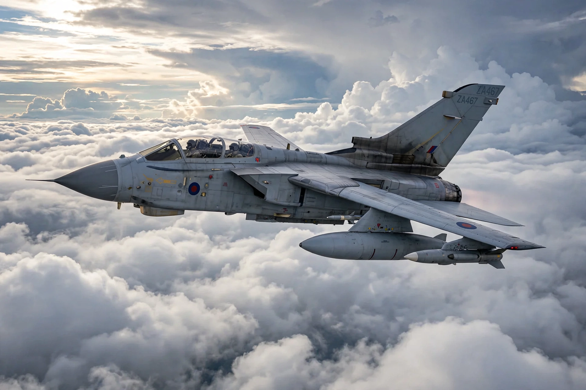

The Panavia Tornado is a family of twin-engine, variable-sweep wing multirole combat aircraft, jointly developed by the United Kingdom, West Germany and Italy via the Panavia Aircraft consortium. It first flew on 14 August 1974 and was introduced in 1979–1980.

Three main variants were produced: the Tornado IDS (interdictor/strike), the Tornado ECR (electronic combat/reconnaissance, SEAD), and the Tornado ADV (air defence variant, developed for the RAF as the Tornado F2/F3 interceptor). Operators included the RAF, Luftwaffe, German Navy, Italian Air Force and Royal Saudi Air Force.
Tornados flew combat missions in the Gulf War (1991), the Bosnian War, Kosovo War, Iraq War, Afghanistan, Libya (2011) and operations against ISIL. RAF Tornados were retired in 2019; German and Italian fleets are progressively being replaced, partly by the Eurofighter Typhoon.
Crew 2; length 16.72 m; max speed Mach 2.2; range about 1,390 km combat radius; armament includes Mauser BK-27 cannon, guided and unguided bombs, and air-to-air missiles for self-defence.
See also: Variable-sweep wing